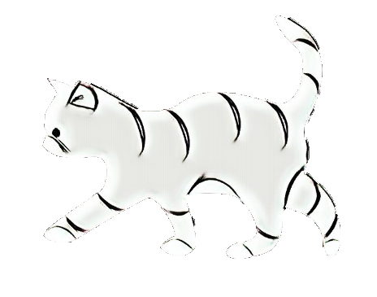
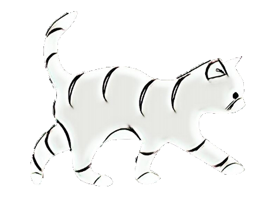

Meow Mates
 
Ever felt alone at university? It's something many of us have experienced, walking through campus surrounded by people but still feeling a bit isolated. This project started from those feelings. We wanted to create a space where everyone can feel seen and connected. Whether you're having a tough day or just need a place to share, we're here for you.

I'm a student studying Computer Science and Interactive Media, passionate about technology and coding. Feel free to reach out!
NYUADreach is a dedicated platform for mental health and well-being at NYUAD. It hosts frequent meetings and workshops to allow individuals to share their concerns, bond with others, and find support in a safe environment. You can learn more about them on their Instagram